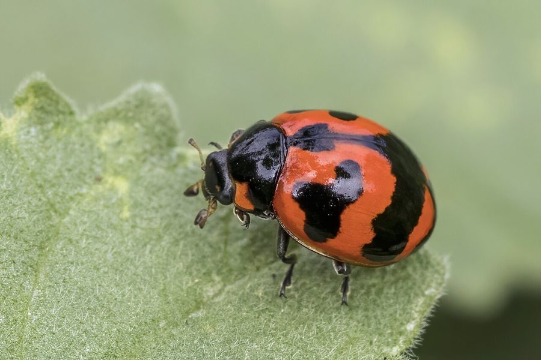

लेडीबर्ड बीटलTransverse Ladybird
Coccinella transversalis · Coccinellidae · INS-0028

- Scientific name
- Coccinella transversalis Fabricius, 1781
- Family
- Coccinellidae
- Hindi
- लेडीबर्ड बीटल
- Status here
- native
- IUCN
- not evaluated
When to look कब देखें
Present all year.
लेडीबर्ड बीटल / Transverse Ladybird
Coccinella transversalis Fabricius, 1781 — Coccinellidae
लेडीबर्ड बीटल (ट्रांसवर्स लेडीबर्ड) — पूर्वी उत्तर प्रदेश के खेतों, बागों और बगीचों में पाई जाने वाली एक अत्यंत महत्वपूर्ण, लाभकारी और छोटी निवासी शिकारी भृंग (beetle) है। इसे स्थानीय स्तर पर "सोनपंखी" भी कहा जाता है। इसका शरीर गोल, गुंबददार (dome-shaped) और चमकीला नारंगी-लाल (orange-red) होता है। इसकी सबसे बड़ी विशेषता इसके पंखों (elytra) पर पाए जाने वाले काले रंग के आड़े-तिरछे धब्बे और पट्टियाँ (transverse black bands) हैं, जो इसे सामान्य 7-बिंदु वाली लेडीबर्ड से अलग करते हैं। यह बीटल और इसका कैटरपिलर जैसा लार्वा दोनों ही फसलों को नुकसान पहुंचाने वाले हानिकारक कीटों, विशेष रूप से "लाही" या "चेपा" (aphids) को बड़ी संख्या में खाते हैं, जिससे यह किसानों का एक सच्चा मित्र कीट है।
Quick Identification त्वरित पहचान
| Feature | Description |
|---|---|
| Size | Small, rounded beetle; body length 5–7 mm; width 4–5 mm |
| Colouration | Convex, shiny orange-red to brick-red wings (elytra); black head and thorax |
| Elytra Pattern | A black suture stripe down the center; 3 pairs of transverse, wavy black bands across the wings |
| Thorax | Solid black with two distinct, small creamy-white spots on the front corners |
| Antennae | Short, clubbed antennae used for smelling aphid colonies |
Field tip: Look on mustard leaves or cowpea plants infested with tiny black/green bugs. Watch for a small, dome-shaped orange-red beetle with black wavy bands crawling actively among the bugs.
Morphology आकारिकी
Biometrics (typical measurements for adult specimens in local mustard fields):
| Measurement | Range |
|---|---|
| Body length | 5.0–7.0 mm |
| Wing length | 4.0–6.0 mm |
Body details: The body is highly convex, hemispherical, and smooth. The head is small and partially retracted under the black pronotum (thorax shield). The pronotum is characterized by a solid black color with two small, oval creamy-white spots at the anterior margins. The elytra (hardened forewings) are bright orange-red or reddish-yellow. The black markings on the elytra include a central black suture line and three pairs of transverse, zig-zag black bands that do not cross the suture.
Behaviour & Ecology व्यवहार और पारिस्थितिकी
Active predator and aphid hunter.
- Aggressive foraging: Both adults and larvae crawl actively over leaves, using their chemical senses to locate dense colonies of plant-sucking aphids. A single adult can consume over 50 aphids a day.
- Reflex bleeding: When threatened by birds or ants, the beetle secretes a toxic, yellow, bitter-tasting fluid (hemolymph) containing alkaloids from its knee joints. This deters predators.
- Flight: Capable of strong flight, flying from one crop plot to another in search of aphid outbreaks.
Ecological Role पारिस्थितिक भूमिका
Primary agricultural predator.
- Biological pest control: Serve as a major natural predator of aphids, leafhoppers, and scale insects, keeping pest populations below economic thresholds without the need for chemical spraying.
- Crop ally: Their presence in high numbers in Basti fields prevents outbreaks of mustard aphids (Lipaphis erysimi).
Life Cycle / Phenology जीवन चक्र
- Breeding: Breeds during the cooler crop seasons (November to March) when aphid food is abundant.
- Egg laying: The female lays clusters of 10–50 small, spindle-shaped, bright yellow eggs on the underside of leaves close to aphid colonies. Eggs hatch in 3–5 days.
- Larval stage: The larvae feed aggressively on aphids, growing through 4 instars in 10–14 days.
- Pupation: The mature larva attaches its tail to a leaf surface and pupates. The pupa is orange-yellow with black markings. The adult emerges in 4–6 days.
Larval Stage
- Larval appearance: The larva is 8–10 mm long, elongated, and flat, resembling a tiny alligator. It is dark grey or bluish-black with orange spots along the sides. The body is covered in small, spiny tubercles.
- Foraging behavior: The larva is more aggressive than the adult, consuming up to 100 aphids per day using its sharp mandibles to suck their body fluids. It is highly active on plant stems.
Host Plants or Prey आहार
Larval and Adult prey:
- Primary prey: Mustard aphids (Lipaphis erysimi), cotton aphids (Aphis gossypii), and cowpea aphids.
- Alternative food: Pollen and nectar when aphids are scarce, and eggs of small moths.
Associated crops:
- Mustard [FLR-0052 Indian Mustard], Wheat [FLR-0051 Wheat], cowpea, and brinjal.
Predators / Natural Enemies शत्रु
- Birds: Insectivorous birds like sparrows (such as [BRD-0007 House Sparrow]) occasionally prey on them, though detered by their bitter taste.
- Arachnids: Jumping spiders (like [SPD-0003 Pantropical Jumping Spider]).
- Parasitoid Wasps: A small wasp (Dinocampus coccinellae) lays eggs inside the adult beetle, consuming it from inside.
Agricultural / Human Relevance कृषि प्रासंगिकता
Farmer's best friend.
- Chemical pesticide reduction: The preservation of ladybird beetles in Basti fields directly reduces the need for chemical insecticide sprays on mustard crops.
- Farmer education: Local agricultural extension programs (Krishi Vigyan Kendra, Basti) educate farmers to identify the ladybird larvae, discouraging them from spraying when these predators are active.
- Traditional control: Farmers traditionally avoid spraying when ladybird numbers are high, preserving this natural biological control resource.
Expected Locally स्थानीय रूप से अपेक्षित
Not a field record. Written from published accounts for eastern Uttar Pradesh. No confirmed local sighting yet — if you have seen it, that is what the atlas needs.
अभी तक स्थानीय पुष्टि नहीं। यह विवरण प्रकाशित स्रोतों से है, किसी अवलोकन से नहीं।
Commonly found in the extensive mustard fields (sarson ke khet) of Basti, Gonda, and Ayodhya districts during January and February. Flocks of larvae can be seen on cowpea plants in home vegetable gardens during autumn.
Distribution वितरण
Global range: Widespread across the Indo-Australian region, covering India, Sri Lanka, China, Southeast Asia, Australia, and New Zealand.
In India: Found throughout the agricultural plains of the country.
In Uttar Pradesh: Abundant resident in all farming districts, particularly during the Rabi crop season.
In Basti district / eastern UP: Found in all agricultural blocks, especially in mustard and vegetable-growing areas.
Research Questions शोध प्रश्न
Anyone can investigate these | कोई भी इन प्रश्नों की जाँच कर सकता है
- How many mustard aphids does a single ladybird larva consume during its entire developmental period in Basti? — Recreate a test container and count daily prey consumption.
- What is the survival rate of ladybird pupae when placed on the upperside vs. underside of mustard leaves? — Map pupal positions and monitor survival.
- Does the use of organic neem oil sprays affect ladybird survival compared to chemical insecticides? — Test survival rates on treated leaves.
- How do ladybird beetles survive the hot dry summer months when crop aphids are absent? / गर्मियों के महीनों में जब फसलों पर लाही (aphids) नहीं होती, तब लेडीबर्ड बीटल कैसे जीवित रहती हैं? — Survey alternative summer habitats (weeds, trees).
- Does the presence of predatory ants defend aphid colonies from ladybird attacks? / क्या चींटियों की उपस्थिति लाही (aphids) के उपनिवेशों को लेडीबर्ड के हमलों से बचाती है? — Observe interactions of ants and beetles on cowpea stems.
Similar Species मिलती-जुलती प्रजातियाँ
| Species | Key Difference | हिंदी |
|---|---|---|
| Coccinella septempunctata (Seven-spot Ladybird) | Slightly larger; elytra have exactly seven distinct, round black spots (no transverse bands) | लेडीबर्ड (सात-बिंदु) — सात गोल धब्बे, पट्टी रहित |
| Menochilus sexmaculatus (Six-spotted Zig-zag Ladybird) | Smaller (4–5 mm); elytra have two dark zig-zag bands and a black spot near the apex | छोटी लेडीबर्ड — छोटा आकार, ज़िग-ज़ैग पट्टियाँ |
| Henosepilachna vigintioctopunctata (28-spotted Ladybird) | Herbivorous pest; dull, hairy orange elytra with 28 small black dots; feeds on brinjal leaves | धब्बेदार बीटल — शाकाहारी कीट, रोएँदार पंख, 28 धब्बे |
Field rule: Small size, dome-shaped orange-red elytra, a black thorax with two creamy corner spots, and three pairs of transverse, wavy black bands across the wings identify the Transverse Ladybird.
Taxonomy & Classification वर्गीकरण
Original description. Johan Christian Fabricius described the Transverse Ladybird as Coccinella transversalis in 1781 in his work Species Insectorum (Vol. 1, p. 97). The type locality was Coromandel, India. The genus name Coccinella is derived from the Latin coccineus, meaning "scarlet" or "crimson". The specific name transversalis refers to the transverse black bands on the wings.
Subspecies. Monotypic — no subspecies are currently recognised in its Asian range.
Family and order placement. Placed in the order Coleoptera, family Coccinellidae (ladybird beetles).
Phylogenetic notes. Coccinella transversalis is closely related to Coccinella septempunctata, sharing a common predatory ancestry characterized by highly specialized aphid-hunting behaviors and chemical defenses.
IUCN status rationale. Not evaluated (NE) by the IUCN Red List. It is a highly common agricultural generalist with no conservation threats.
Photo Gallery फोटो गैलरी
References संदर्भ
- Fabricius, J. C. (1781). Species Insectorum; exhibentes eorum differentias specificas, synonyma auctorum, loca Natalia, metamorphosis insectorum adiectis observationibus, descriptionibus. Vol. 1. Hamburgi et Kilonii, p. 97. [original description]
- Omkar & Pervez, A. (2004). Ecology of a predatory ladybird, Coccinella transversalis Fabricius. International Journal of Tropical Insect Science, 24(2), 117-126.
- Poorani, J. (2002). An annotated checklist of the Coccinellidae (Coleoptera) (excluding Epilachninae) of the Indian Subcontinent. Oriental Insects, 36(1), 307-383.
- Mani, M. S. (1968). General Entomology. Oxford & IBH Publishing Co., New Delhi.
- ZSI Checklist — Coccinellidae of Uttar Pradesh (2015).
- GBIF Occurrence Data — Coccinella transversalis, Uttar Pradesh (2010–2025).
Source file: species/fauna/insects/transverse_ladybird.md